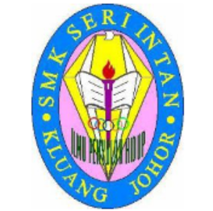
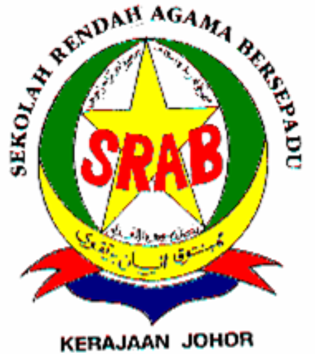

MilestonesTertiary (UiTM) Secondary (SMKSI) Primary (SRAB)Click any link above to jump instantly to that content row block area |
My Academic HistoryEducation has played an essential role in framing my worldview and critical thinking assets. Below is a detailed look at the milestones of my primary, secondary, and tertiary academic journey. 1. Tertiary Education: Universiti Teknologi MARA (UiTM)
Years: 2024 - Present 2. Secondary Education: SMK Seri Intan (SMKSI)
 Years: 2019 - 2024Secondary school years were among the most enjoyable periods of education, filled with valuable experiences and achievements. Throughout the years, I was active participating in various school activities that helped develop communication, leadership and teamwork skills while also creating many meaningful friendships and memories. The responsibility of serving as Treasurer in the Student Leaders Board strengthened my management abilities as well as discipline. One of the most memorable achievements was receiving the Outstanding Student Award in 2022 in recognition of active involvement in school activities. In secondary school, my SPM examination was completed with 5As. 3. Primary Education: Sekolah Rendah Agama Bersepadu (SRAB)
 Years: 2013 - 2018Primary school education served as an important foundation in shaping both my academic and personal growth. One of the most significant milestones was the completion of the UPSR examination, in which I achieved 1A and 5B. Although the results were not outstanding, the experience strengthened my determination to continuously improve my academic performance and pursue greater success in educational journey. 🔗 Academic Reference: Discover more details regarding courses, campus structure, and updates at the official UiTM Kedah Campus Branch Portal. |